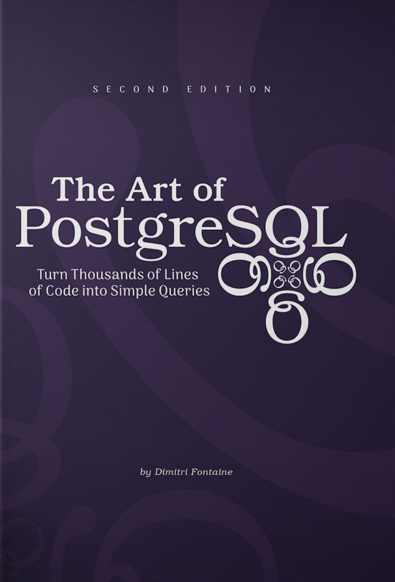
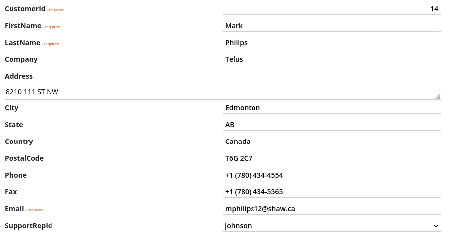
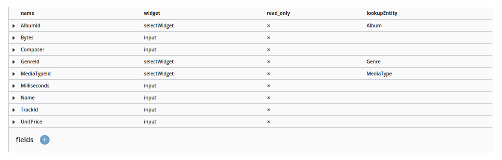
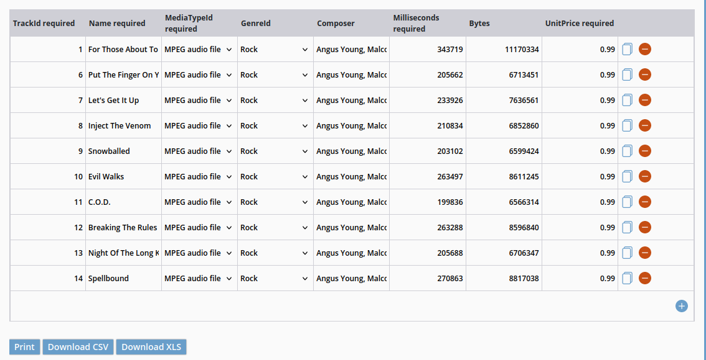
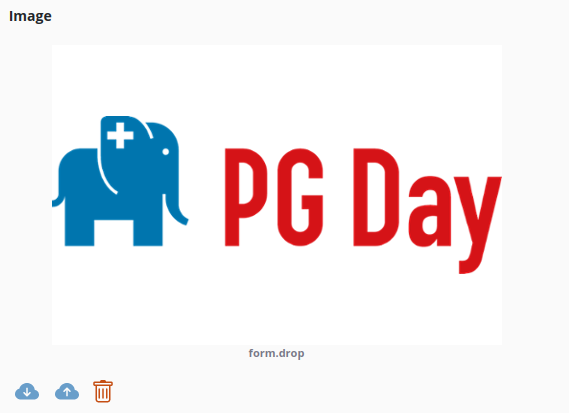
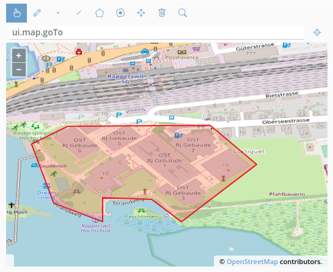

Box Framework
Out of the Box web applications on top of PostgreSQL
https://github.com/Insubric/box
select current_user
Andrea Minetti andrea@wavein.ch
Independent software developer - wavein.ch
Swiss Federal Institute for Forest Snow and Landscape Research WSL

Why box framework?
Problem: how can we quickly create web applications to interact with our DB?
Originally developed to allow environmental researchers with basic database skills to manage their own research data
Reads the information schema and, with no additional user interaction, provides all necessary basic functionality
Principles
- No application code needed
- Take advantage of PostgreSQL Features
- Entire state defined in the database
Books
The Art of PostgreSQL - Dimitri Fontaine
Concepts
- Box user == DB user
- Form/Sub-form concept (One-to-many relationship)
- Metadata (Auto-generated for db tables/views, UI Builder for forms)
UI
- Prebuilt widgets
- GIS support (with SwissTopo Integration)
Std HTML input
Tablechild widget
EditableTable widget
File widget
Map widget
Features
- REST API
- XLS, CSV, SHP data export
- Customizable HTML and PDF reports (charts, plots, ... take advantage of javascript ecosystem)
- Multi-language support
- SMTP support
- Public forms
Implementation
Simple 3 tier architecture
Presentation Layer: scala.js

Application Layer: scala

Data Layer: PostgreSQL

Implementation
On installation, a new box schema is created in the db with all configuration required by the system
Requirements
- PostrgreSQL 13+
- Java 8+
- sbt (scala build tool https://www.scala-sbt.org/download.html)
Bootstrap
$ sbt new minettiandrea/box.g8
$ cd project-name
$ sbt installBox
$ sbt generateModel
$ sbt run
DEMO
What it is not
- DDL Designer
- Not suitable for big projects
Outlook
- Better user management (SSO integration)
- JSONSchema/OpenAPI native support
- Offline-first web application
- Integration with other reporting systems (i.e. R shiny)